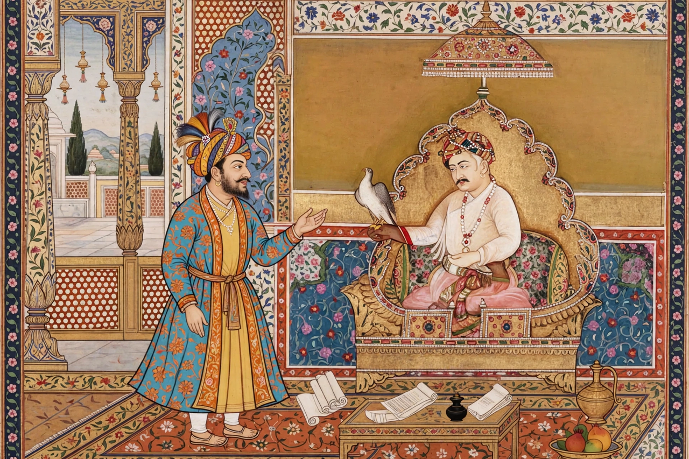

| Birbal | |
|---|---|
 | |
| Born | Mahesh Das, 1528 Kalpi, Mughal Empire |
| Died | 16 February 1586 (aged 57–58) Malandari Pass, near Swat |
| Occupation | Courtier, advisor, military commander, poet |
| Known for | Wit and wisdom in the court of Akbar; one of the Navaratnas |
Birbal (born Mahesh Das; 1528 – 16 February 1586) was a Hindu courtier and advisor in the court of the Mughal emperor Akbar, remembered as one of the Navaratnas, the nine jewels of the court. He is the most famous of Akbar's courtiers in Indian folklore, the hero of countless witty tales of the "Akbar–Birbal" tradition.
Born into a Kayastha (or, in some accounts, Brahmin) family at Kalpi, Mahesh Das was a poet and singer who first served at the court of Raja Ram Chandra of Rewa before joining Akbar's court around 1556–1562. Akbar gave him the title Birbal ("brave and mighty") and later Raja and the mansab rank of 2,000. He became the emperor's closest companion and a trusted military commander and diplomat, despite the jealousy of Muslim nobles; according to Abul Fazl, Birbal was the only Hindu to accept Akbar's Din-i Ilahi.
In 1586 Birbal was killed in an ambush by Yusufzai Afghan tribesmen at the Malandari Pass during the disastrous Mughal expedition into the Swat region — one of the worst military losses of Akbar's reign. Akbar is said to have mourned him for days, refusing food.
The historical Birbal is inseparable from the folk figure: hundreds of stories credit him with solving impossible problems with a single witty line — counting the crows of Agra, shortening a line without touching it, or proving a point with a half-cooked khichdi. The tales, still retold in Indian children's literature and television, have made "Birbal" synonymous with quick wit.
Todar Mal · Tansen · Abul Fazl · Ibadat Khana